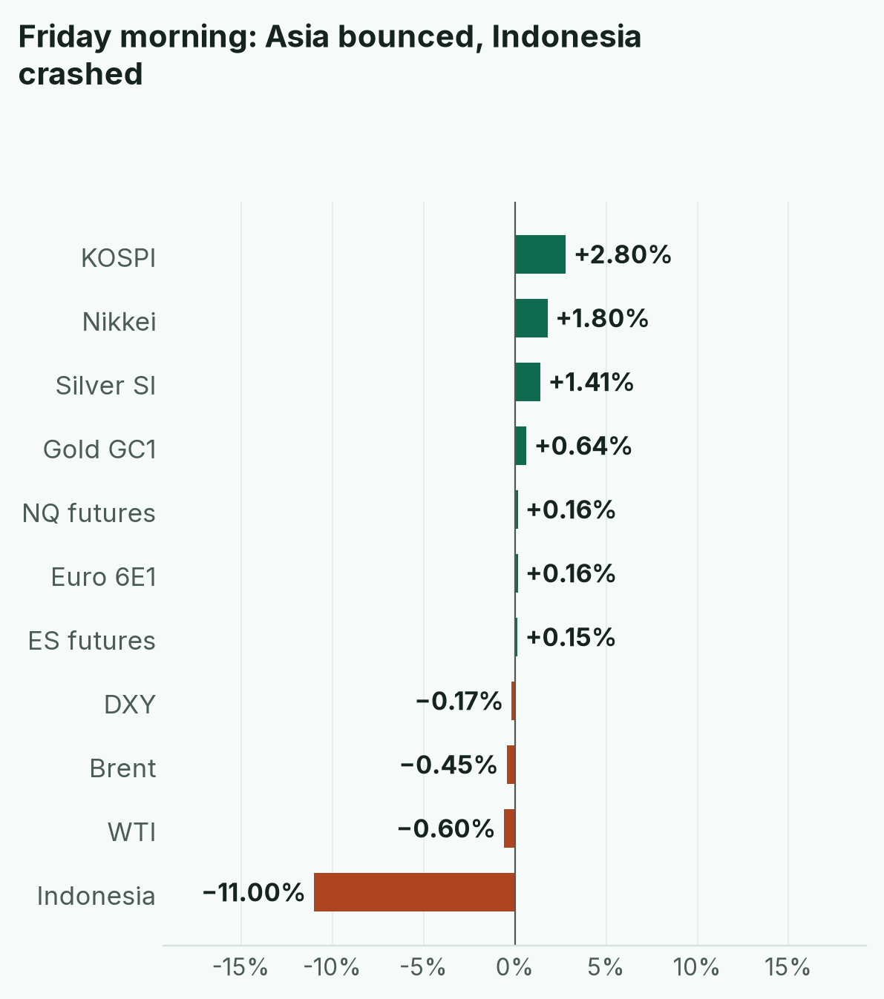
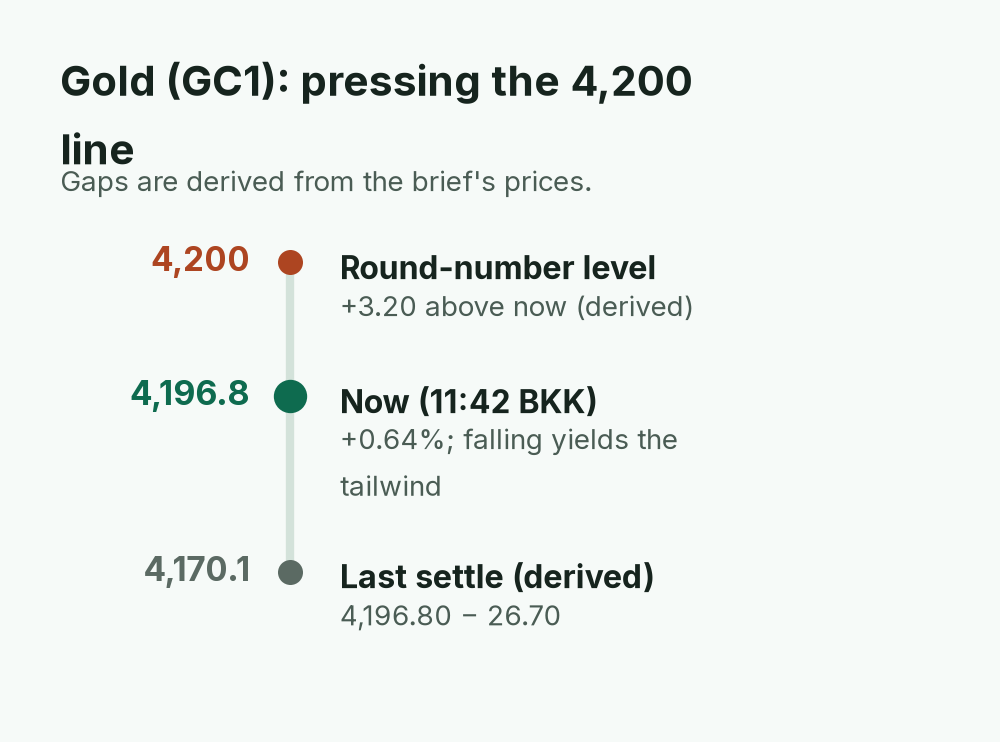
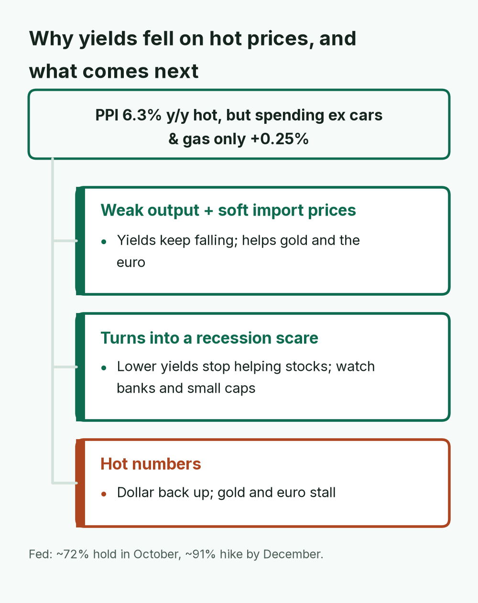
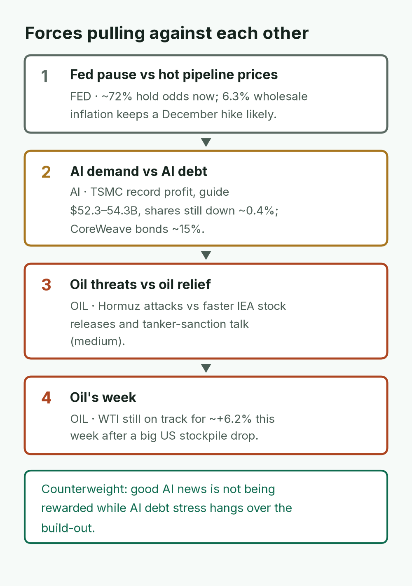
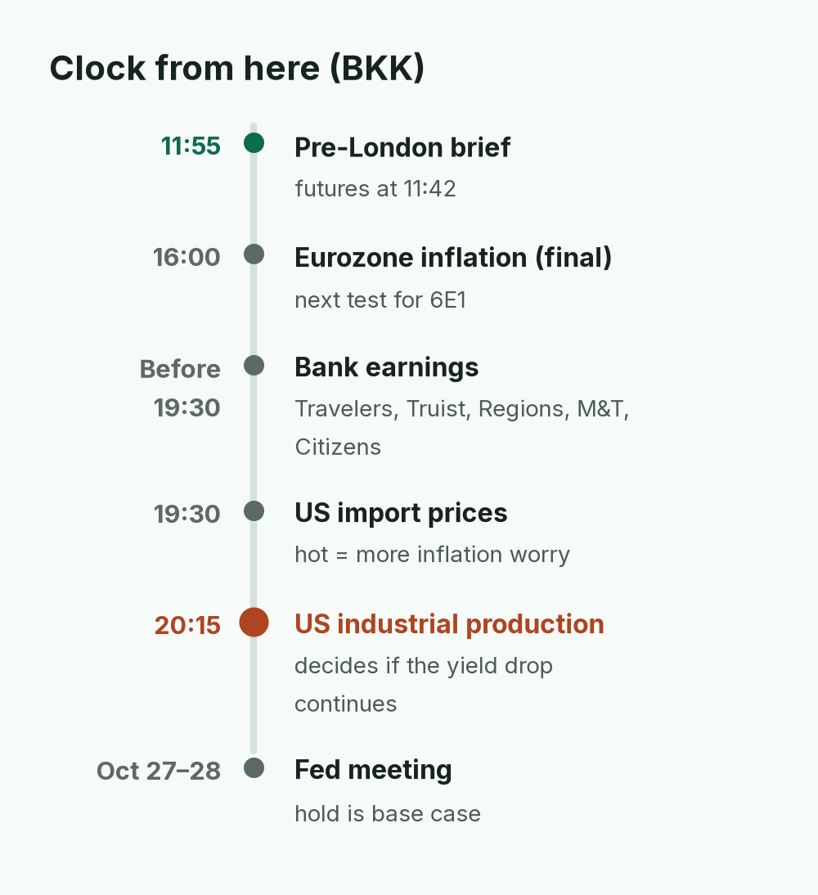
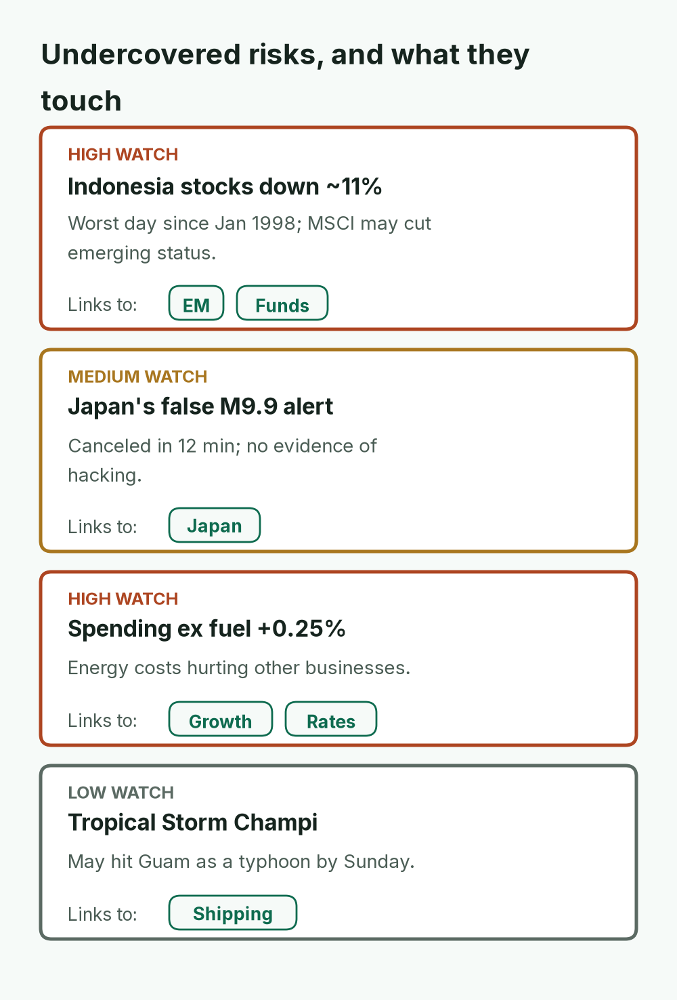
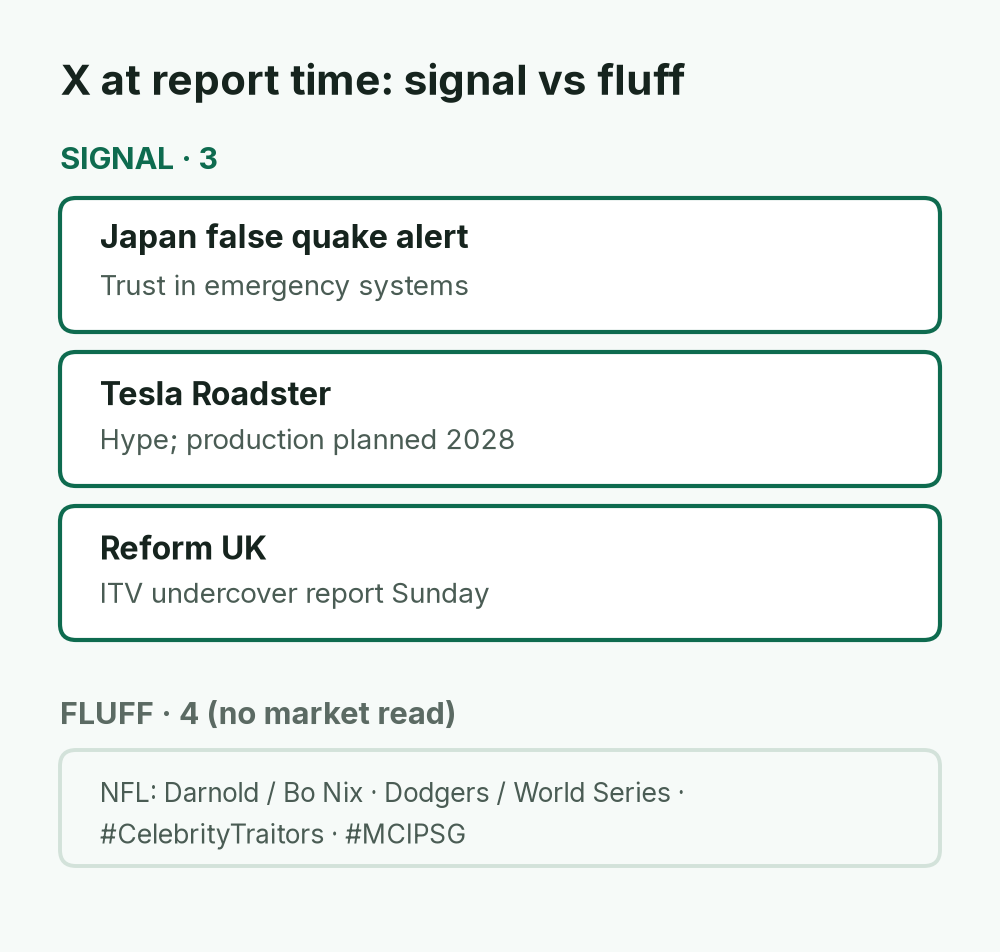
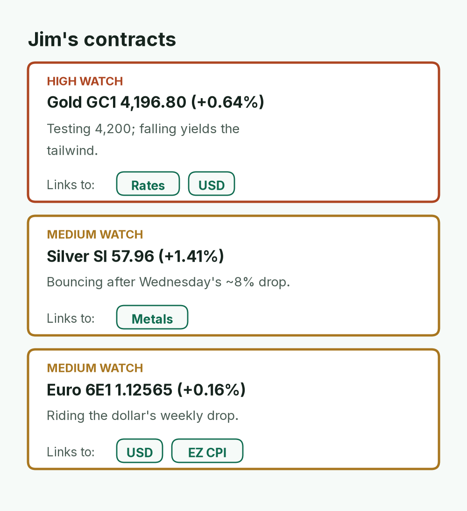
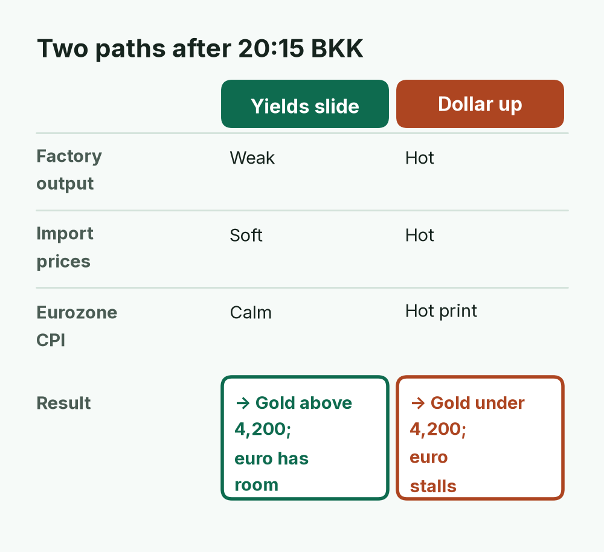

Yields fell hard, stocks shrugged off hot inflation; gold presses 4,200
NQ futures (11:42 BKK)
30,193.25
▲ +0.16%
Gold GC1 (11:42 BKK)
4,196.80
▲ +0.64%
Euro 6E1 (11:42 BKK)
1.12565
▲ +0.16%
US 10Y (Thu close)
5.089%
▼ −0.10 pts
Brent
105.44
▼ −0.45%
ES futures
7,803.00
▲ +0.15%
WTI (10:39 BKK)
97.37
▼ −0.60%
Dollar index (DXY)
101.88
▼ −0.17%
Macro pulse · 5Y breakevens: — · Fed: Oct hold ~72%; Dec hike ~91%

Chip-heavy Korea and Japan led the rebound and gold and the euro rose as the dollar slipped. Indonesia (~−11%) crashed on MSCI's plan to cut its emerging-market status.
TODAY'S CALL
US factory data at 20:15 BKK decides whether falling yields keep going. Gold needs yields to stay low to hold above 4,200; the euro has room while the dollar slides, but eurozone inflation at 16:00 BKK is its next test.
WATCH (BKK)
16:00 Eurozone Sep inflation (final)
Before 19:30: Travelers, Truist, Regions, M&T, Citizens
Wholesale prices ran hot, but spending outside cars and gas rose only 0.25%, down from about 1.1%. That slowdown is why the bond market chose growth worry over inflation fear.
April · Market Intel, pre-London · Fri Oct 16, 2026 · ~11:55 BKK / ~05:55 London
Headline: bond yields fell hard and stocks shrugged off another hot inflation report. The Dow rose 1.08%, the S&P 500 rose 0.33% and the Nasdaq barely moved (+0.08%).
Wholesale prices jumped the most since 2022, yet traders now bet the Fed waits in October. Asia bounced after Thursday's chip rout. Gold futures are back near $4,200.
Scoreboard notes: futures are contracts that trade nearly 24 hours, so they show the mood before markets open. Quotes are at 04:42 UTC / 11:42 BKK from the Yahoo Finance futures feed unless noted. US oil futures (WTI) were 97.37, −0.60% at 10:39 BKK (Investing.com). The 10-year US yield (what the US government pays to borrow for 10 years) closed Thursday at 5.089%, down 0.10 points, its lowest since Sep 23.
1) Top signals
Wholesale prices ran very hot. PPI (the producer price index, what businesses pay) rose 1.3% in September and 6.3% over the year, the biggest jumps since 2022, driven by energy. (High: BLS via CNBC)
Shoppers are pulling back under the surface. Retail sales rose 0.8% vs 0.4% forecast, but without cars and gas only 0.25%, down from about 1.1%. High fuel costs are squeezing other spending. (High: CNBC)
October hike bets faded. Traders see ~72% odds the Fed holds on Oct 28 (CME FedWatch) but still ~91% odds of a hike by December (LSEG). Daly: more hikes probably needed, not in October. Warsh does "not prejudge" meetings. (High)
Gold and euro up as the dollar slides.Gold (GC1) 4,196.80, +0.64% and Euro (6E1) 1.12565, +0.16%, both at 11:42 BKK. Dollar index (DXY) 101.88, −0.17%, heading for its first weekly drop in five weeks. (High for direction)

Gold is just 3.20 (derived) below 4,200. Holding above it needs US yields to stay low after today's factory data.
2) Why it matters
The bond market is now betting on slowing growth more than on hot prices. Cooling spending outside fuel is the reason.
That is why yields fell even though prices ran hot. Lower yields lifted gold and the euro.
Asia bought the dip. KOSPI +2.8% and Nikkei +1.8%, after Thursday's falls of nearly 8% and 5%. (Reuters)
Mainland China went the other way and closed at a 14-month low as AI hardware stocks sold off. (Business Recorder, Caixin)
Mentor: when yields drop on bad growth news, it can help stocks for a while. If it turns into a recession scare, it stops helping. Watch whether banks and small companies keep rising.

The bond market is betting on slowing growth more than hot prices. Today's import prices and factory output test that bet.
3) Chessboard
Fed pause vs hot pipeline prices. Odds favor a hold now. But 6.3% wholesale inflation keeps a December hike likely.
AI demand vs AI debt.TSMC (the world's biggest contract chipmaker) posted record profit and guided next quarter's sales to $52.3–54.3B. Its shares still slipped ~0.4% in Taipei. Good news is not being rewarded while CoreWeave's ~15% bond yields hang over the AI build-out.
Oil threats vs oil relief. Attacks near the Strait of Hormuz keep supply at risk. The IEA (the club of oil-importing countries) is speeding up emergency stock releases. There are also reports the US may ease sanctions on tankers. (Medium: Investing.com)
Oil's weekly picture: WTI is still on track for about +6.2% this week after a big US stockpile drop. (Investing.com)

The winners of these pairs set the direction for rates, chip stocks and oil.
4) Leading indicators (BKK times)
16:00: Eurozone September inflation (final). It matters for the euro and 6E1.
Before 19:30: bank earnings. Travelers, Truist, Regions, M&T and Citizens report before the US open.
19:30: US import prices. A hot number would add to the inflation worry.
20:15: US industrial production (factory and utility output).
Levels to watch:GC1 4,200 (a round number gold is pressing). 6E1 1.1250. 10-year yield 5.09% (a three-week low). DXY 101.80. Brent $105.
Oct 27–28: Fed meeting. A hold is the base case.
Rule of thumb: weak factory output plus soft import prices keeps yields falling, which helps gold and the euro. Hot numbers would push the dollar back up.

Factory output at 20:15 BKK is the day's key print; eurozone inflation at 16:00 hits the euro first.
5) Undercovered
Indonesia's stock market fell ~11%, its worst day since January 1998. MSCI (the firm behind major global stock indexes) proposed cutting it from "emerging market" status. That can force funds to sell. (High: Reuters, Investing.com)
Japan's false M9.9 earthquake alert. Japan's weather agency sent a quake warning around 12:36 JST and canceled it at 12:48. It is investigating the cause. "Cyberattack" also trended on X, but there is no evidence of one. (High on the cancellation: Kyodo, Japan Times. Low on any hacking claim.)
Spending outside fuel is slowing. The 0.25% figure is the clearest sign yet that high energy prices are hurting other businesses. (High: CNBC)
Tropical Storm Champi may reach Guam as a typhoon by Sunday. It is a watch item for Pacific shipping. (Medium: X news summary)

Indonesia's crash shows how index changes can force selling; the 0.25% spending figure is the clearest growth warning.
Worldwide: Japanese quake-alert tags such as M9.9, plus Japanese tags for "cyberattack" and "hacking."
Signal: Japan's false alert (a test of trust in emergency systems). Tesla's Roadster demo (it flipped in midair with SpaceX thrusters, but production is planned for 2028, so it is hype more than sales). Reform UK is under fire over an ITV undercover report airing Sunday.
X news also shows "buy the dip" chatter after Wednesday's tech drop. Treat it as mood, not evidence.
Noise: NFL Thursday night football, baseball playoffs and reality TV.

Only three trends carry any market angle; the 'buy the dip' chatter on X is mood, not evidence.
7) Jim's contracts
Gold (GC1) 4,196.80, +0.64%. It is testing 4,200. Falling yields are the tailwind.
Silver (SI) 57.96, +1.41%. It is bouncing after Wednesday's ~8% drop.
Euro (6E1) 1.12565, +0.16%. It is riding the dollar's weekly drop. Eurozone inflation at 16:00 BKK is its next test.

All three rise as US yields and the dollar ease; eurozone inflation at 16:00 BKK is the euro's next test.
Bottom line
The market chose growth worry over inflation fear, and that pulled yields down. Today's US factory data at 20:15 BKK decides whether the move keeps going. For Jim: gold needs yields to stay low to hold above 4,200. The euro has room while the dollar keeps sliding, but a hot eurozone print or a dollar bounce could stall it. Interpretive note: it is a Friday after a whiplash week; position squaring before the weekend can exaggerate late moves.
Confidence: cash closes, PPI, retail sales, Warsh quotes and Reuters Asia moves are high. Futures quotes from the Yahoo feed are high for direction and medium for exact level. Hike odds are medium-high. X news summaries are medium. The hacking claim is low.

Gold needs yields to stay low; the euro has room while the dollar slides. Friday position squaring can exaggerate late moves.
Sent by April via briefs-by-april@mail.grokbot.com · Figures from April's brief; "—" = not reported. Not investment advice.